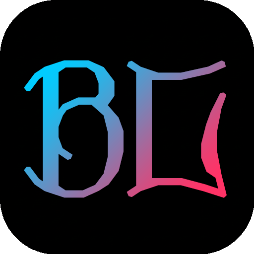

LibreTV 是一個免費的線上影片搜尋平台，提供影片搜尋和播放服務，致力於為使用者帶來最佳體驗。
本專案程式碼代管在 GitHub 上，歡迎造訪我們的儲存庫：
造訪 GitHub 儲存庫隱私權政策
資料保護
我們尊重並保護您的隱私。LibreTV 不收集任何個人資料，且不會限制造訪或使用本網站。
服務說明
本平台僅用於提供線上影片搜尋與播放服務。所有資料均由第三方介面提供，我們不會儲存或追蹤使用者資訊。
版權聲明與申訴機制
免責聲明
LibreTV 僅提供影片搜尋服務，不直接提供、儲存或上傳任何影片內容。所有搜尋結果均來自第三方公開介面。使用者在使用本站服務時，須遵守相關法律法規，不得利用搜尋結果從事侵權行為，如下載、傳播未經授權的作品等。
申訴管道
若您是版權方或相關權利人，發現本站搜尋結果中存在侵犯您合法權益的內容，請透過以下管道向我們反映：
申訴信箱：
troll@pissmail.com
請在申訴郵件中提供：您的身分證明、權利證明、侵權內容的具體連結及相關說明。我們將在收到申訴後儘快處理，對於確認侵權的內容，將立即中斷相關連結，停止展示侵權內容，並將處理結果回覆給您。